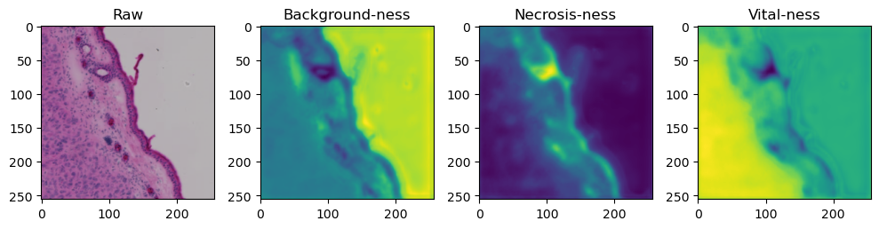
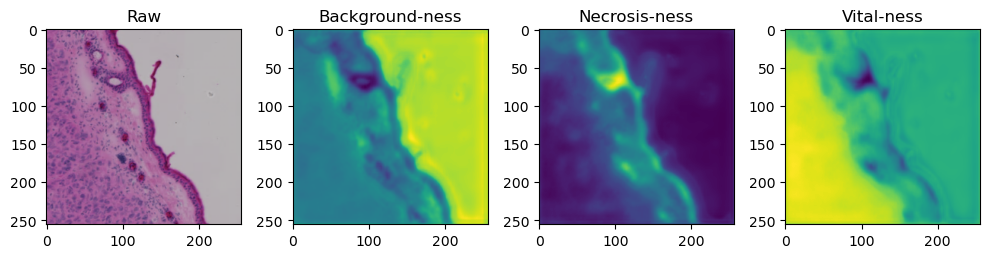

Training a 2D Unet model
Contents
Training a 2D Unet model#
In this model, we will demonstrate how to train a U-Net model from scratch. It is strongly encouraged to create a separate environment for this:
conda create -n pytorch-segmentation python=3.9
conda activate pytorch-segmentation
In order to correctly install pytorch, find the matching command for your system on the pytorch page:

After that is done, install some more packages:
mamba install scikit-image albumentations segmentation-models-pytorch pandas matplotlib torchmetrics tensorboard -c conda-forge
import os
import numpy as np
import tqdm
from skimage import io
import pandas as pd
import matplotlib.pyplot as plt
import datetime
import yaml
import albumentations as albu
import torch, torchmetrics
from torch.utils.data import DataLoader
from torch.nn import CrossEntropyLoss
from torch.utils.tensorboard import SummaryWriter
import segmentation_models_pytorch as smp
import requests
import zipfile
C:\Users\johamuel\Anaconda3\envs\pytorch-segmentation\lib\site-packages\tqdm\auto.py:22: TqdmWarning: IProgress not found. Please update jupyter and ipywidgets. See https://ipywidgets.readthedocs.io/en/stable/user_install.html
from .autonotebook import tqdm as notebook_tqdm
Dataset preparation#
The first thing we have to do for Pytorch training, is tpo create a custom Dataset class for our dataset. This dataset object will then serve as a utility through which Pytorch can access and load all the data from the drive. During the training process we will iterate over our dataset, so the Dataset implementation needs to have two important member functions:
__len__(): The Dataloader needs to know how many samples there are.__getitem__(): The Dataloader needs to be able to access the i-th sample out of our whole dataset.
In this example, we will create a pandas dataframe with two columns image and mask and pass this to the Dataset. Working with dataframes is particularly easy because it allows us to easily split our data into a training and a validation cohort.
Note 1: We will add the option for augmentation to the datafly. If we pass an augmentation function as an argument (which should accept parameters image and mask as inputs), the augmentations are applied on-the-fly. We will use the albumentations package for this.
Note 2: We will use a pretrained model. Such pretrained models are typically implemented for “normal” images, i.e. RGB images. Hence, the used model expects images to have the dimensions [3, Y, X]. Thus, if we work with grayscale images, we need to stack the single channel we are working with 3 times to create an artifical RGB image.
class Dataset():
def __init__(self, root, image_dir = 'images', labels_dir = 'labels', augmentation=None):
self.root = root
self.augmentation = augmentation
self.image_dir = os.path.join(root, image_dir)
self.labels_dir = os.path.join(root, labels_dir)
images = os.listdir(os.path.join(self.root, image_dir))
labels = os.listdir(os.path.join(self.root, labels_dir))
self.data = pd.DataFrame(np.asarray([images, labels]).T, columns=['images', 'labels'])
def __getitem__(self, i):
filename_image = os.path.join(self.image_dir, self.data['images'].loc[i])
filename_label = os.path.join(self.labels_dir, self.data['labels'].loc[i])
image = io.imread(filename_image)/255
mask = np.argmax(io.imread(filename_label), axis=2)
if self.augmentation:
sample = self.augmentation(image=image.astype(np.float32), mask=mask)
image, mask= sample['image'], sample['mask']
return {'image': image.astype(float).transpose((2,0,1)), 'labels' : mask[None, :]}
def __len__(self):
return len(self.data)
Download the data:
if not 'data.zip' in os.listdir('.'):
r = requests.get(r'https://zenodo.org/record/7213527/files/HE_segmentation_data.zip')
with open("data.zip", 'wb') as f:
f.write(r.content)
with zipfile.ZipFile('./data.zip', 'r') as zip_ref:
zip_ref.extractall('./data')
Unzip:
root = os.path.abspath('./data')
root
'C:\\Users\\johamuel\\Documents\\BiAPoL\\Projects\\Quantitative_Bio_Image_Analysis_with_Python_2022\\docs\\day2e_deep_learning_segmentation\\data'
Let’s use this opportunity to quickly check what the above-defined Dataset class does with this. For thhis, we create an instance of the Dataset class using the dataframe with the filenames of our training data. Then we’ll try to get an arbitrary sample from the dataset:
MyDataset = Dataset(root=os.path.join(root, 'train'))
sample = MyDataset[1]
fig, axes = plt.subplots(ncols=2, figsize=(15, 15), sharex=True, sharey=True)
axes[0].imshow(sample['image'].transpose((1,2,0)))
axes[1].imshow(sample['labels'][0])
<matplotlib.image.AxesImage at 0x1ffbf048220>
Augmentation#
For a typical segmentation job, it makes sense to augment the data to a certain degree. Albumentations allows to compose several augmentations together and luckily apply it to the image and the mask alike on-the fly. We will use the following augmentations for the training:
Vertical flip: Flip the image upside down in 50% of all calls
Horizontal flip: Same, but horizontal
Random Rotate: * Randomly rotate image and mask by 90 degrees in 50% of all calls
Random brightness/contrast: randomly change the brightness/contrast setting of the image in 20% of all calls
aug_train = albu.Compose([
albu.VerticalFlip(p=0.5),
albu.HorizontalFlip(p=0.5),
albu.RandomRotate90(p=0.5),
albu.RandomBrightnessContrast(p=0.2)
])
Train/test/validation split#
Last but not least, we need to create three subsets from our dataset, a training-, test- and validation-cohort. In every epoch of training (see below), the training process will look at all images in the training cohort and update our model based on this. The model is then applied to the images in the test cohort without updating the model. This is to see how well the method is currently performing. Finally, the model is appliedto the image data in the validation cohort to measure its performance on unknown data. Scikit-learn provides the KFold strategy for problems like this.
ds_train = Dataset(os.path.join(root, 'train'), augmentation=aug_train)
ds_test = Dataset(os.path.join(root, 'test'))
ds_valid = Dataset(os.path.join(root, 'validation'))
print('Samples in training set: ', len(ds_train))
print('Samples in testing set: ', len(ds_test))
print('Samples in validation set: ', len(ds_valid))
Samples in training set: 503
Samples in testing set: 126
Samples in validation set: 70
Model creation and preparation#
Next, we have to actually create an instance of a model which we will train for a number of epochs. This section will mostly set some parameters which are explained here.
device: GPU or CPU? torch works only on Cuda-capable cards. To enable GPU-training, set this variable tocuda. Otherwise set it tocpun_classes: As desribed elsewhere, we are only trying to separate a background nd a foreground here. Hence, there are only 2 classes in our case.epochs: In one epoch, the the Dataloader will go throough the entire dataset, update the layers and then check the net’s performance in the test dataset. This is then repeatedepochstimesbatch_size: During the training process, multiple images are stitched together to a batch of images. This is done along a batch axis that is added to the image data. Typically, images are provided in[B, C, Y, X]shape, withBbeing the batch dimension,Cthe channel dimension andY, Xbeing the actual image dimensions. If thebatch_sizeis set too large, the images may not fit on the GPU anymore. Note: Images in a batch are usually batch-averaged! In other words, the pixel intensity values will be z-score normalized using the commmon mean and standard deviation of the entire batch. Making the batch too small can disrupt these running statistics.learning_rate: How much the weights of every layer should be changed in every training step. This is also referred to as the momentum of the training - see here for a nice explanation!num_workers: How many CPU cores are allowed to be used to operate the dataloaders to feed the data to the network
if torch.cuda.is_available():
device = 'cuda'
else:
device = 'cpu'
n_classes = 3
epochs = 130
batch_size = 6
learning_rate = 2e-5
num_workers = 0
tile_size = ds_train[0]['image'].shape[-1] # get from dataset
model = smp.Unet(
encoder_name='resnet50',
encoder_weights='imagenet',
classes=n_classes,
activation=None,
)
model.to(device)
Unet(
(encoder): ResNetEncoder(
(conv1): Conv2d(3, 64, kernel_size=(7, 7), stride=(2, 2), padding=(3, 3), bias=False)
(bn1): BatchNorm2d(64, eps=1e-05, momentum=0.1, affine=True, track_running_stats=True)
(relu): ReLU(inplace=True)
(maxpool): MaxPool2d(kernel_size=3, stride=2, padding=1, dilation=1, ceil_mode=False)
(layer1): Sequential(
(0): Bottleneck(
(conv1): Conv2d(64, 64, kernel_size=(1, 1), stride=(1, 1), bias=False)
(bn1): BatchNorm2d(64, eps=1e-05, momentum=0.1, affine=True, track_running_stats=True)
(conv2): Conv2d(64, 64, kernel_size=(3, 3), stride=(1, 1), padding=(1, 1), bias=False)
(bn2): BatchNorm2d(64, eps=1e-05, momentum=0.1, affine=True, track_running_stats=True)
(conv3): Conv2d(64, 256, kernel_size=(1, 1), stride=(1, 1), bias=False)
(bn3): BatchNorm2d(256, eps=1e-05, momentum=0.1, affine=True, track_running_stats=True)
(relu): ReLU(inplace=True)
(downsample): Sequential(
(0): Conv2d(64, 256, kernel_size=(1, 1), stride=(1, 1), bias=False)
(1): BatchNorm2d(256, eps=1e-05, momentum=0.1, affine=True, track_running_stats=True)
)
)
(1): Bottleneck(
(conv1): Conv2d(256, 64, kernel_size=(1, 1), stride=(1, 1), bias=False)
(bn1): BatchNorm2d(64, eps=1e-05, momentum=0.1, affine=True, track_running_stats=True)
(conv2): Conv2d(64, 64, kernel_size=(3, 3), stride=(1, 1), padding=(1, 1), bias=False)
(bn2): BatchNorm2d(64, eps=1e-05, momentum=0.1, affine=True, track_running_stats=True)
(conv3): Conv2d(64, 256, kernel_size=(1, 1), stride=(1, 1), bias=False)
(bn3): BatchNorm2d(256, eps=1e-05, momentum=0.1, affine=True, track_running_stats=True)
(relu): ReLU(inplace=True)
)
(2): Bottleneck(
(conv1): Conv2d(256, 64, kernel_size=(1, 1), stride=(1, 1), bias=False)
(bn1): BatchNorm2d(64, eps=1e-05, momentum=0.1, affine=True, track_running_stats=True)
(conv2): Conv2d(64, 64, kernel_size=(3, 3), stride=(1, 1), padding=(1, 1), bias=False)
(bn2): BatchNorm2d(64, eps=1e-05, momentum=0.1, affine=True, track_running_stats=True)
(conv3): Conv2d(64, 256, kernel_size=(1, 1), stride=(1, 1), bias=False)
(bn3): BatchNorm2d(256, eps=1e-05, momentum=0.1, affine=True, track_running_stats=True)
(relu): ReLU(inplace=True)
)
)
(layer2): Sequential(
(0): Bottleneck(
(conv1): Conv2d(256, 128, kernel_size=(1, 1), stride=(1, 1), bias=False)
(bn1): BatchNorm2d(128, eps=1e-05, momentum=0.1, affine=True, track_running_stats=True)
(conv2): Conv2d(128, 128, kernel_size=(3, 3), stride=(2, 2), padding=(1, 1), bias=False)
(bn2): BatchNorm2d(128, eps=1e-05, momentum=0.1, affine=True, track_running_stats=True)
(conv3): Conv2d(128, 512, kernel_size=(1, 1), stride=(1, 1), bias=False)
(bn3): BatchNorm2d(512, eps=1e-05, momentum=0.1, affine=True, track_running_stats=True)
(relu): ReLU(inplace=True)
(downsample): Sequential(
(0): Conv2d(256, 512, kernel_size=(1, 1), stride=(2, 2), bias=False)
(1): BatchNorm2d(512, eps=1e-05, momentum=0.1, affine=True, track_running_stats=True)
)
)
(1): Bottleneck(
(conv1): Conv2d(512, 128, kernel_size=(1, 1), stride=(1, 1), bias=False)
(bn1): BatchNorm2d(128, eps=1e-05, momentum=0.1, affine=True, track_running_stats=True)
(conv2): Conv2d(128, 128, kernel_size=(3, 3), stride=(1, 1), padding=(1, 1), bias=False)
(bn2): BatchNorm2d(128, eps=1e-05, momentum=0.1, affine=True, track_running_stats=True)
(conv3): Conv2d(128, 512, kernel_size=(1, 1), stride=(1, 1), bias=False)
(bn3): BatchNorm2d(512, eps=1e-05, momentum=0.1, affine=True, track_running_stats=True)
(relu): ReLU(inplace=True)
)
(2): Bottleneck(
(conv1): Conv2d(512, 128, kernel_size=(1, 1), stride=(1, 1), bias=False)
(bn1): BatchNorm2d(128, eps=1e-05, momentum=0.1, affine=True, track_running_stats=True)
(conv2): Conv2d(128, 128, kernel_size=(3, 3), stride=(1, 1), padding=(1, 1), bias=False)
(bn2): BatchNorm2d(128, eps=1e-05, momentum=0.1, affine=True, track_running_stats=True)
(conv3): Conv2d(128, 512, kernel_size=(1, 1), stride=(1, 1), bias=False)
(bn3): BatchNorm2d(512, eps=1e-05, momentum=0.1, affine=True, track_running_stats=True)
(relu): ReLU(inplace=True)
)
(3): Bottleneck(
(conv1): Conv2d(512, 128, kernel_size=(1, 1), stride=(1, 1), bias=False)
(bn1): BatchNorm2d(128, eps=1e-05, momentum=0.1, affine=True, track_running_stats=True)
(conv2): Conv2d(128, 128, kernel_size=(3, 3), stride=(1, 1), padding=(1, 1), bias=False)
(bn2): BatchNorm2d(128, eps=1e-05, momentum=0.1, affine=True, track_running_stats=True)
(conv3): Conv2d(128, 512, kernel_size=(1, 1), stride=(1, 1), bias=False)
(bn3): BatchNorm2d(512, eps=1e-05, momentum=0.1, affine=True, track_running_stats=True)
(relu): ReLU(inplace=True)
)
)
(layer3): Sequential(
(0): Bottleneck(
(conv1): Conv2d(512, 256, kernel_size=(1, 1), stride=(1, 1), bias=False)
(bn1): BatchNorm2d(256, eps=1e-05, momentum=0.1, affine=True, track_running_stats=True)
(conv2): Conv2d(256, 256, kernel_size=(3, 3), stride=(2, 2), padding=(1, 1), bias=False)
(bn2): BatchNorm2d(256, eps=1e-05, momentum=0.1, affine=True, track_running_stats=True)
(conv3): Conv2d(256, 1024, kernel_size=(1, 1), stride=(1, 1), bias=False)
(bn3): BatchNorm2d(1024, eps=1e-05, momentum=0.1, affine=True, track_running_stats=True)
(relu): ReLU(inplace=True)
(downsample): Sequential(
(0): Conv2d(512, 1024, kernel_size=(1, 1), stride=(2, 2), bias=False)
(1): BatchNorm2d(1024, eps=1e-05, momentum=0.1, affine=True, track_running_stats=True)
)
)
(1): Bottleneck(
(conv1): Conv2d(1024, 256, kernel_size=(1, 1), stride=(1, 1), bias=False)
(bn1): BatchNorm2d(256, eps=1e-05, momentum=0.1, affine=True, track_running_stats=True)
(conv2): Conv2d(256, 256, kernel_size=(3, 3), stride=(1, 1), padding=(1, 1), bias=False)
(bn2): BatchNorm2d(256, eps=1e-05, momentum=0.1, affine=True, track_running_stats=True)
(conv3): Conv2d(256, 1024, kernel_size=(1, 1), stride=(1, 1), bias=False)
(bn3): BatchNorm2d(1024, eps=1e-05, momentum=0.1, affine=True, track_running_stats=True)
(relu): ReLU(inplace=True)
)
(2): Bottleneck(
(conv1): Conv2d(1024, 256, kernel_size=(1, 1), stride=(1, 1), bias=False)
(bn1): BatchNorm2d(256, eps=1e-05, momentum=0.1, affine=True, track_running_stats=True)
(conv2): Conv2d(256, 256, kernel_size=(3, 3), stride=(1, 1), padding=(1, 1), bias=False)
(bn2): BatchNorm2d(256, eps=1e-05, momentum=0.1, affine=True, track_running_stats=True)
(conv3): Conv2d(256, 1024, kernel_size=(1, 1), stride=(1, 1), bias=False)
(bn3): BatchNorm2d(1024, eps=1e-05, momentum=0.1, affine=True, track_running_stats=True)
(relu): ReLU(inplace=True)
)
(3): Bottleneck(
(conv1): Conv2d(1024, 256, kernel_size=(1, 1), stride=(1, 1), bias=False)
(bn1): BatchNorm2d(256, eps=1e-05, momentum=0.1, affine=True, track_running_stats=True)
(conv2): Conv2d(256, 256, kernel_size=(3, 3), stride=(1, 1), padding=(1, 1), bias=False)
(bn2): BatchNorm2d(256, eps=1e-05, momentum=0.1, affine=True, track_running_stats=True)
(conv3): Conv2d(256, 1024, kernel_size=(1, 1), stride=(1, 1), bias=False)
(bn3): BatchNorm2d(1024, eps=1e-05, momentum=0.1, affine=True, track_running_stats=True)
(relu): ReLU(inplace=True)
)
(4): Bottleneck(
(conv1): Conv2d(1024, 256, kernel_size=(1, 1), stride=(1, 1), bias=False)
(bn1): BatchNorm2d(256, eps=1e-05, momentum=0.1, affine=True, track_running_stats=True)
(conv2): Conv2d(256, 256, kernel_size=(3, 3), stride=(1, 1), padding=(1, 1), bias=False)
(bn2): BatchNorm2d(256, eps=1e-05, momentum=0.1, affine=True, track_running_stats=True)
(conv3): Conv2d(256, 1024, kernel_size=(1, 1), stride=(1, 1), bias=False)
(bn3): BatchNorm2d(1024, eps=1e-05, momentum=0.1, affine=True, track_running_stats=True)
(relu): ReLU(inplace=True)
)
(5): Bottleneck(
(conv1): Conv2d(1024, 256, kernel_size=(1, 1), stride=(1, 1), bias=False)
(bn1): BatchNorm2d(256, eps=1e-05, momentum=0.1, affine=True, track_running_stats=True)
(conv2): Conv2d(256, 256, kernel_size=(3, 3), stride=(1, 1), padding=(1, 1), bias=False)
(bn2): BatchNorm2d(256, eps=1e-05, momentum=0.1, affine=True, track_running_stats=True)
(conv3): Conv2d(256, 1024, kernel_size=(1, 1), stride=(1, 1), bias=False)
(bn3): BatchNorm2d(1024, eps=1e-05, momentum=0.1, affine=True, track_running_stats=True)
(relu): ReLU(inplace=True)
)
)
(layer4): Sequential(
(0): Bottleneck(
(conv1): Conv2d(1024, 512, kernel_size=(1, 1), stride=(1, 1), bias=False)
(bn1): BatchNorm2d(512, eps=1e-05, momentum=0.1, affine=True, track_running_stats=True)
(conv2): Conv2d(512, 512, kernel_size=(3, 3), stride=(2, 2), padding=(1, 1), bias=False)
(bn2): BatchNorm2d(512, eps=1e-05, momentum=0.1, affine=True, track_running_stats=True)
(conv3): Conv2d(512, 2048, kernel_size=(1, 1), stride=(1, 1), bias=False)
(bn3): BatchNorm2d(2048, eps=1e-05, momentum=0.1, affine=True, track_running_stats=True)
(relu): ReLU(inplace=True)
(downsample): Sequential(
(0): Conv2d(1024, 2048, kernel_size=(1, 1), stride=(2, 2), bias=False)
(1): BatchNorm2d(2048, eps=1e-05, momentum=0.1, affine=True, track_running_stats=True)
)
)
(1): Bottleneck(
(conv1): Conv2d(2048, 512, kernel_size=(1, 1), stride=(1, 1), bias=False)
(bn1): BatchNorm2d(512, eps=1e-05, momentum=0.1, affine=True, track_running_stats=True)
(conv2): Conv2d(512, 512, kernel_size=(3, 3), stride=(1, 1), padding=(1, 1), bias=False)
(bn2): BatchNorm2d(512, eps=1e-05, momentum=0.1, affine=True, track_running_stats=True)
(conv3): Conv2d(512, 2048, kernel_size=(1, 1), stride=(1, 1), bias=False)
(bn3): BatchNorm2d(2048, eps=1e-05, momentum=0.1, affine=True, track_running_stats=True)
(relu): ReLU(inplace=True)
)
(2): Bottleneck(
(conv1): Conv2d(2048, 512, kernel_size=(1, 1), stride=(1, 1), bias=False)
(bn1): BatchNorm2d(512, eps=1e-05, momentum=0.1, affine=True, track_running_stats=True)
(conv2): Conv2d(512, 512, kernel_size=(3, 3), stride=(1, 1), padding=(1, 1), bias=False)
(bn2): BatchNorm2d(512, eps=1e-05, momentum=0.1, affine=True, track_running_stats=True)
(conv3): Conv2d(512, 2048, kernel_size=(1, 1), stride=(1, 1), bias=False)
(bn3): BatchNorm2d(2048, eps=1e-05, momentum=0.1, affine=True, track_running_stats=True)
(relu): ReLU(inplace=True)
)
)
)
(decoder): UnetDecoder(
(center): Identity()
(blocks): ModuleList(
(0): DecoderBlock(
(conv1): Conv2dReLU(
(0): Conv2d(3072, 256, kernel_size=(3, 3), stride=(1, 1), padding=(1, 1), bias=False)
(1): BatchNorm2d(256, eps=1e-05, momentum=0.1, affine=True, track_running_stats=True)
(2): ReLU(inplace=True)
)
(attention1): Attention(
(attention): Identity()
)
(conv2): Conv2dReLU(
(0): Conv2d(256, 256, kernel_size=(3, 3), stride=(1, 1), padding=(1, 1), bias=False)
(1): BatchNorm2d(256, eps=1e-05, momentum=0.1, affine=True, track_running_stats=True)
(2): ReLU(inplace=True)
)
(attention2): Attention(
(attention): Identity()
)
)
(1): DecoderBlock(
(conv1): Conv2dReLU(
(0): Conv2d(768, 128, kernel_size=(3, 3), stride=(1, 1), padding=(1, 1), bias=False)
(1): BatchNorm2d(128, eps=1e-05, momentum=0.1, affine=True, track_running_stats=True)
(2): ReLU(inplace=True)
)
(attention1): Attention(
(attention): Identity()
)
(conv2): Conv2dReLU(
(0): Conv2d(128, 128, kernel_size=(3, 3), stride=(1, 1), padding=(1, 1), bias=False)
(1): BatchNorm2d(128, eps=1e-05, momentum=0.1, affine=True, track_running_stats=True)
(2): ReLU(inplace=True)
)
(attention2): Attention(
(attention): Identity()
)
)
(2): DecoderBlock(
(conv1): Conv2dReLU(
(0): Conv2d(384, 64, kernel_size=(3, 3), stride=(1, 1), padding=(1, 1), bias=False)
(1): BatchNorm2d(64, eps=1e-05, momentum=0.1, affine=True, track_running_stats=True)
(2): ReLU(inplace=True)
)
(attention1): Attention(
(attention): Identity()
)
(conv2): Conv2dReLU(
(0): Conv2d(64, 64, kernel_size=(3, 3), stride=(1, 1), padding=(1, 1), bias=False)
(1): BatchNorm2d(64, eps=1e-05, momentum=0.1, affine=True, track_running_stats=True)
(2): ReLU(inplace=True)
)
(attention2): Attention(
(attention): Identity()
)
)
(3): DecoderBlock(
(conv1): Conv2dReLU(
(0): Conv2d(128, 32, kernel_size=(3, 3), stride=(1, 1), padding=(1, 1), bias=False)
(1): BatchNorm2d(32, eps=1e-05, momentum=0.1, affine=True, track_running_stats=True)
(2): ReLU(inplace=True)
)
(attention1): Attention(
(attention): Identity()
)
(conv2): Conv2dReLU(
(0): Conv2d(32, 32, kernel_size=(3, 3), stride=(1, 1), padding=(1, 1), bias=False)
(1): BatchNorm2d(32, eps=1e-05, momentum=0.1, affine=True, track_running_stats=True)
(2): ReLU(inplace=True)
)
(attention2): Attention(
(attention): Identity()
)
)
(4): DecoderBlock(
(conv1): Conv2dReLU(
(0): Conv2d(32, 16, kernel_size=(3, 3), stride=(1, 1), padding=(1, 1), bias=False)
(1): BatchNorm2d(16, eps=1e-05, momentum=0.1, affine=True, track_running_stats=True)
(2): ReLU(inplace=True)
)
(attention1): Attention(
(attention): Identity()
)
(conv2): Conv2dReLU(
(0): Conv2d(16, 16, kernel_size=(3, 3), stride=(1, 1), padding=(1, 1), bias=False)
(1): BatchNorm2d(16, eps=1e-05, momentum=0.1, affine=True, track_running_stats=True)
(2): ReLU(inplace=True)
)
(attention2): Attention(
(attention): Identity()
)
)
)
)
(segmentation_head): SegmentationHead(
(0): Conv2d(16, 3, kernel_size=(3, 3), stride=(1, 1), padding=(1, 1))
(1): Identity()
(2): Activation(
(activation): Identity()
)
)
)
At the end of the day, deep learning is a tricky optimization job. torch provides a few optimizers:
# Specify optimizer & early stopping
optimizer = torch.optim.Adam(model.parameters(), lr= learning_rate)
The loss#
An aspect of paramount importance is the used loss function. After all, deep learning is all about passing data through the network, evaluating the performance and then changing the weights accordingly. The loss function determines how exactlly performance is measured. Torch offers a few different implementations but you can basically implement any metric that compares two label images and calculates something like a degree of similarity. Something that is very commonly used (and thus being used here) is the CrossEntropyLoss() function, which calculates the cross-entropy of two label images. The CrossEntropy is closely related to the Mutual Information.
Since the cross-entropy is a bit abstract to interpret, we will use a more intuitive measure to monitor the performance of our network in the validation cohort: The Jaccard-coefficient. During the training we should observe that the cross-entropy in the training process goes down while the Jaccard-index should converge closer to 1.
criterion_train = CrossEntropyLoss()
criterion_test = torchmetrics.functional.accuracy
Training#
Now we have everything at hand to actually start training! For this, we first create Datasets from our train/test dataframes. Let’s not forget to pass the composed albumentations only to the training dataset. We could also apply the augmentations to the trainign data, but it is preferable to have performance statistics on the real, unchanged image data.
# Create dataloaders
train_dataloader = DataLoader(dataset=ds_train, batch_size=batch_size, num_workers=num_workers)
test_dataloader = DataLoader(dataset=ds_test, batch_size=batch_size, num_workers=num_workers)
valid_dataloader = DataLoader(dataset=ds_valid, batch_size=batch_size, num_workers=num_workers)
Every training epoch follows the following steps:
Set the model to training mode: In this mode, torch automatically updates the gradients of the model’s layers on-the-fly as image data is passed through the layers. The optimizer can then have a look at these gradients to know how the convolutions in the respective layers need to be changed to improve performance
Reset the gradients known to the optimizer from the previous epoch
Pass each batch of training data through the network and calculate the loss (deviation of acquired result and correct mask)
Back-propagate the loss through the network and calculate the gradients
Let the optimizer update the weights of the network
To check the progress of the training, navigate to the working directory in a terminal and open the tensorboard with
tensorboard --logdir=runs
Then, navigate to http://localhost:6006/ in the browser.
writer = SummaryWriter()
best_score = 0
for epoch in range(epochs):
model.train() # set to training mode
optimizer.zero_grad() # reset gradients
tk0 = tqdm.tqdm(train_dataloader, total=len(train_dataloader), desc='Epoch: ' + f'{epoch}')
avg_train_loss = []
for b_idx, data in enumerate(tk0):
# Move images and masks in batch to GPU
for key, value in data.items():
data[key] = value.to(device).float()
# Feed the batch through the network and catch output into a new dictionary key
data['prediction'] = model(data['image'])
# Calculate and track the loss
loss = criterion_train(data['prediction'], data['labels'].squeeze().long())
avg_train_loss.append(loss.cpu().detach().numpy())
# Update the weights
loss.backward()
optimizer.step()
writer.add_scalar('Loss/train', np.asarray(avg_train_loss).squeeze().mean(), epoch)
# Switch to validation: No updating gradients now.
model.eval()
avg_test_loss = []
with torch.no_grad():
tk1 = tqdm.tqdm(test_dataloader, total=len(test_dataloader))
for b_idx, data in enumerate(tk1):
# Move only images to GPU and directly pass the batch through the model
data['prediction'] = model(data['image'].to(device).float())
out = torch.argmax(data['prediction'], dim=1)
test_loss = criterion_test(data['prediction'].argmax(axis=1).cpu(), data['labels'].int(), average=None, num_classes=3)
avg_test_loss.append(test_loss)
averages=np.mean(np.stack(avg_test_loss), axis=1)
writer.add_scalar(f'Loss/test class 0', averages[0], epoch)
writer.add_scalar(f'Loss/test class 1', averages[1], epoch)
writer.add_scalar(f'Loss/test class 2', averages[2], epoch)
# if this model is better than the ones before, save it
if np.mean(averages) > best_score:
best_score = np.mean(averages)
torch.save(model.state_dict(), './best_model.pt')
print('Train loss:', np.asarray(avg_train_loss).squeeze().mean(), 'Test loss: ', np.mean(averages))
Validation#
Last but not least, let’s apply the trained model to the data in the validation cohort and calculate performance statistics.
valid_score = []
tk2 = tqdm.tqdm(valid_dataloader, total=len(valid_dataloader))
for b_idx, data in enumerate(tk2):
# Move only images to GPU and directly pass the batch through the model
data['prediction'] = model(data['image'].to(device).float())
out = torch.argmax(data['prediction'], dim=1)
valid_loss = criterion_test(data['prediction'].argmax(axis=1).cpu(), data['labels'].int(), average=None, num_classes=3)
valid_score.append(valid_loss)
valid_score = np.stack(valid_score).mean(axis=0)
performance = {}
for i in range(n_classes):
print(f'Accuracy for label {i}: {valid_score[i]}')
Accuracy for label 0: 0.9536442160606384
Accuracy for label 1: 0.8054279685020447
Accuracy for label 2: 0.9184861779212952
Advanced implementation aspects:#
There are a few options we can to improve the training process and make it more robust. Some of them are listed here and will be expored in more advanced notebooks for the sake of this notebook’s simplicity.
Early Stopping: We have implemented a naive way of stopping the training process if the model is good enough. However, to effectively prevent overfitting, we need to stop the training process as soon as performance is not improving anymore. Thus, a more suitable early stopping implementation would have to look at the train/test performance scores within the last X epochs and check if the variance of performance scores has been small. If so, the training process will be interrupted.
Weighted sampling: If we want to segmented regions in the image, which are rare in our training data, any well-behaving network should lean towards not predicting such labels at all. After all, the error in prediction is small if these labels are sufficiently scarce. To counter this, we can introduce weighted sampling to ensure that the network is equally exposed to all present labels in the image data.
Scheduling: As the model converges closer to its optimum, it is not wise to keep updating the model at the same speed as during the first epochs. We can do this by changing the
learning_rateparameter as we progress through the epochs. Thus, the steps become smaller and safer. See this tweet for a nice visualization.Visualization: It is good practice to visualize the training process through a side-by-side comparison of reference annotation and predicted label image.
Inference#
Applying the model to data is also called inference. Let’s try this on some sample data. If you have not trained a model of your own previously, you can load the one that comes with the downloaded data:
model.load_state_dict(torch.load('./data/best_model.pt', map_location=torch.device('cpu')))
<All keys matched successfully>
Disable gradients:
torch.no_grad()
<torch.autograd.grad_mode.no_grad at 0x1ffbf179280>
test_image = io.imread('./data/test_data.tif').transpose((2,0,1))
test_image.shape
(3, 2676, 3332)
We need to tile up our data because moving everything through the network at once takes too much memory:
tile_size=512
with torch.no_grad():
tk0 = tqdm.tqdm(valid_dataloader, total=len(valid_dataloader))
for b_idx, data in enumerate(tk0):
# Move images and masks in batch to GPU
for key, value in data.items():
data[key] = value.to(device).float()
# Feed the batch through the network and catch output into a new dictionary key
data['prediction'] = model(data['image'])
for i in range(data['image'].shape[0]):
fig, axes = plt.subplots(ncols=4, figsize=(10,40))
axes[0].imshow(data['image'][i].cpu().numpy().transpose((1,2,0)))
axes[1].imshow(data['prediction'][i][0].cpu().numpy())
axes[2].imshow(data['prediction'][i][1].cpu().numpy())
axes[3].imshow(data['prediction'][i][2].cpu().numpy())
axes[0].set_title('Raw')
axes[1].set_title('Background-ness')
axes[2].set_title('Necrosis-ness')
axes[3].set_title('Vital-ness')
fig.tight_layout()
25%|██████████████████▌ | 3/12 [00:06<00:20, 2.26s/it]C:\Users\johamuel\AppData\Local\Temp\ipykernel_12704\602782010.py:13: RuntimeWarning: More than 20 figures have been opened. Figures created through the pyplot interface (`matplotlib.pyplot.figure`) are retained until explicitly closed and may consume too much memory. (To control this warning, see the rcParam `figure.max_open_warning`). Consider using `matplotlib.pyplot.close()`.
fig, axes = plt.subplots(ncols=4, figsize=(10,40))
100%|█████████████████████████████████████████████████████████████████████████| 12/12 [00:25<00:00, 2.14s/it]


 

sample = list(tk0)[-1]
sample['image'].shape
torch.Size([4, 3, 256, 256])
output = model_children[0](sample['image'].float())
output[0].shape
torch.Size([4, 3, 256, 256])
ncols=10
fig, axes = plt.subplots(nrows=5, ncols=ncols, figsize=(15,8))
batch = 0
for k in range(1,6):
for i in range(ncols):
feature_maps = output[k][batch].detach().cpu().numpy()
axes[k-1, i].imshow(feature_maps[i], cmap='gray')
axes[k-1,0].set_ylabel('$N_{featuremaps}$ '+f'= {len(feature_maps)}' + '\n' + f'{feature_maps[i].shape[0]} x {feature_maps[i].shape[1]}')
fig.tight_layout()
fig.savefig('featuremaps.png')
plt.imshow(sample['image'].detach().numpy()[batch].transpose((1,2,0)))
plt.savefig('input.png')